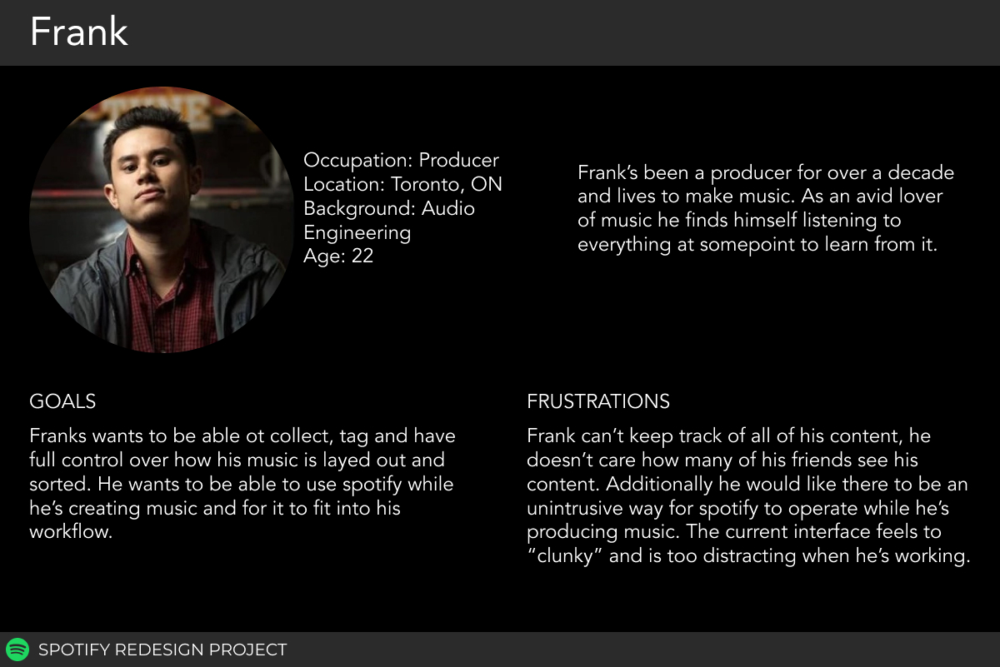
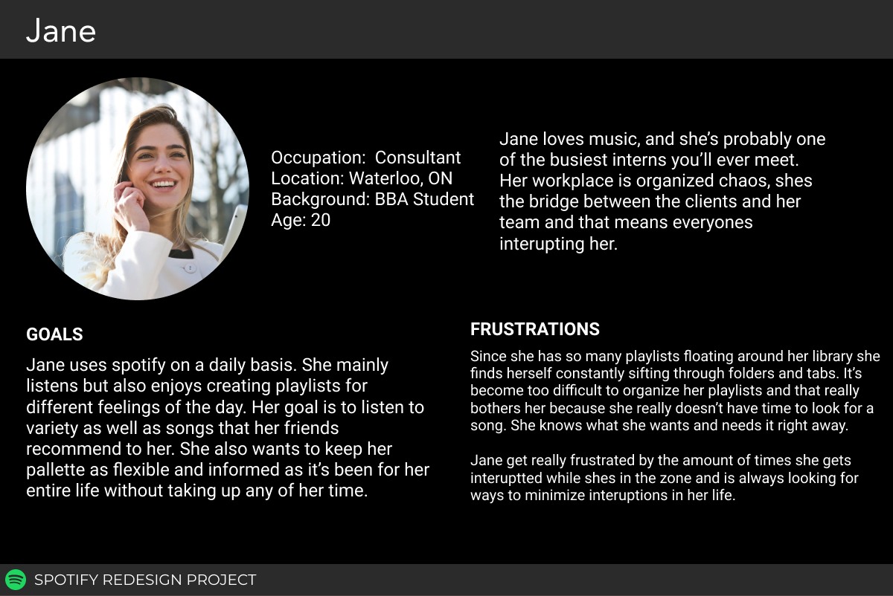
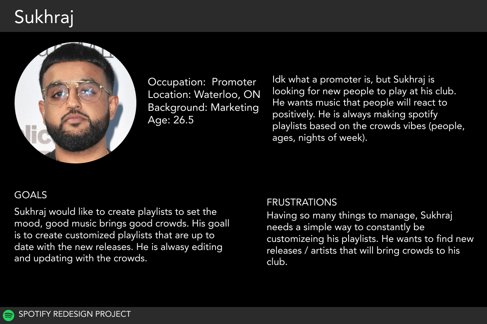
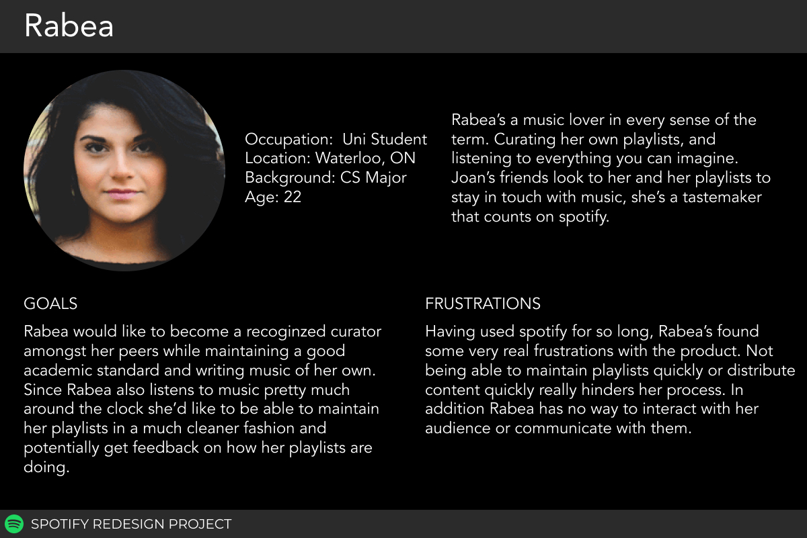
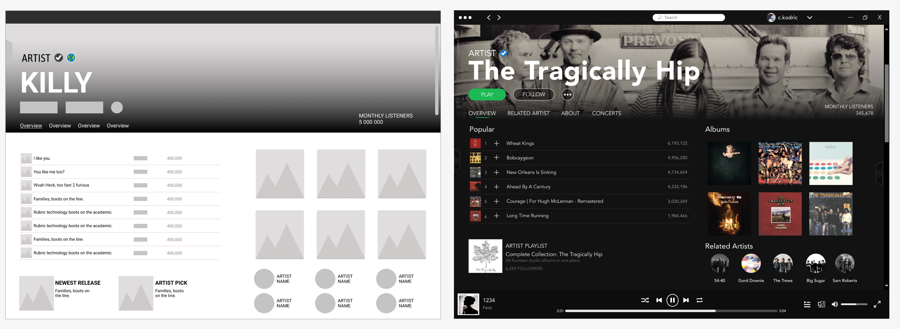
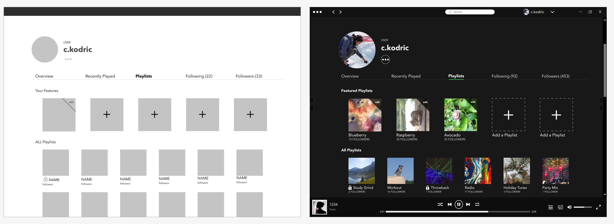
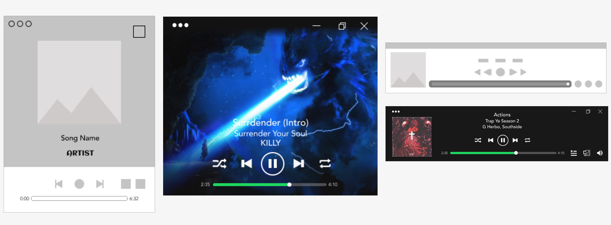
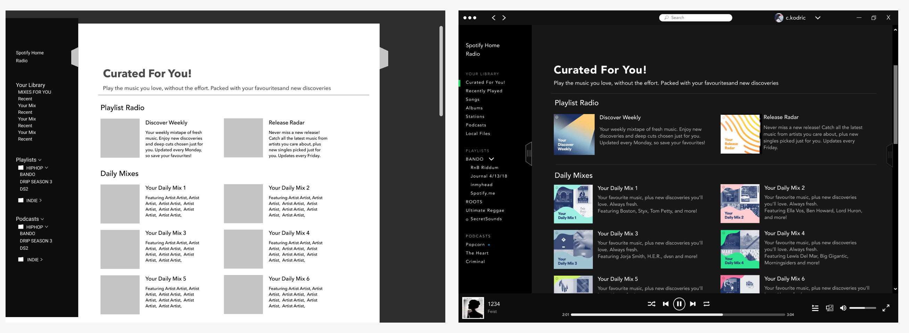

Spotify Redesign
Introduction
This is my take on a Spotify redesign. I wanted to do this project because music is a huge part of my life, almost every day I listen to music and podcasts. I started observing the patterns I use with Spotify and found that I use the mobile and desktop version of the application equally, and I listen to a lot of podcasts when I’m working. The disconnect from the mobile and the web application features really intrigued me to question myself, how would I like it? How would it be user friendly? How can I redesign pages to create a more effective user experience? Every page began with ideas, which turned into solution sketches, which became wireframes, and finally a mock-up. Below are my wireframes and mock-ups of the pages I created.
| Project: | Mockup / Redesign |
| Date: | Winter 2018 |
| Tools: | Figma |
Users
I asked multiple questions with the purpose of uncovering what each individual believed the strengths and weaknesses of Spotify were, as well as more technical questions about the flow and experience of the actual app.
Users typically land on a spectrum like this:
- Professional Listeners:
- Is more selective about what she listens to.
- Has explored or is familiar with content creation.
- An active user of Soundcloud’s social features.
- Casual Listeners:
- Relies on playlists/curated content.
- Attracted to Soundcloud by word-of-mouth.
- Likely a user of other streaming services.
   
Artists
I wanted to feature The Tragically Hip, they are a Canadian Rock band that connected their listeners through generations. I grew up listening to them with my Dad.
Some of the changes here were based on users interacting with the pages, finding specific songs, and albums sometimes led to confusion.
Some of my favourites: Feist, The Hip, The Weeknd, Bon Iver, and so many more!

Profile
This page was based mainly on Frank. The featured playlists are dynamic so the user is allowed to showcase what people view when someone visits their page. The ability to view all playlists outside of the side navigation bar was also added. It gives the users ability to view their public and private playlists together.

Playlists
There are so many playlists available, a recommended playlist section was added. The design decision was made since users find it difficult to explore what they already like. This gives them the opportunity to find new songs and artists within similar playlists.
Some of my favourites: Spotify’s Fresh Finds, Totally Alt, and playlists that artists create.

Mini Players
There’s a little button in the bottom right of the app to expand your page, I bet you didn’t know that. I sure didn’t until I started exploring. When clicked it turns into a full screen of your album. But wouldn’t it be cool to view it in a small corner of your screen, easy to change songs, and easy to keep hidden.

Radio
What I first saw when I clicked Radio were the recently played, but I never played anything. After scrolling down I saw the genre tags and had no idea what they did. I wanted to showcase the genres to look more like radio playlists so you know that clicking on one takes you to that radio.

For You!
I love what Spotify did with curated playlists, I listen to my Discover Weekly and Release Radar every week to hear what they have made for me. The current tab is only the daily mixes which made it difficult for users to find the other two. I wanted to change them to a curated for you page to encourage easy finding since they encourage users to branch out musically.

Podcasts
Below you’ll see I did a lot of podcast pages since I really enjoy them. There are so many feature that the mobile application does that the web application does not. As a podcast user this is frustrating since I want to see more than four at a time when searching. I created the section to have easy access to recommendations, episodes, podcasts, and categories. When using the web version you are unable to download episodes and read their descriptions or save them into playlists, but in the redesign I made sure to incorporate those features.
Some of my favourites: Criminal, Popcorn, Rolling Stone: Music Now, and UI Breakfast